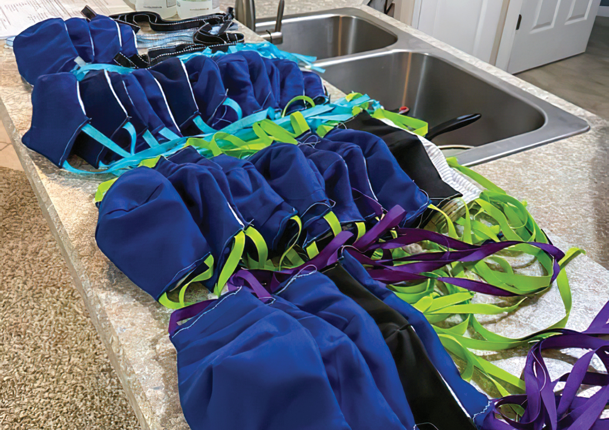

For two years, the EVMS
Street Health team
worked passionately to serve those experiencing homelessness in Hampton Roads.
But as the COVID‑19 pandemic forced clinics to
close, student volunteers were left searching for
new ways to provide for their patients.
The student-led HOPES (Health Outreach
Partnership of EVMS Students) Free Clinic was
facing a similar problem. As the only free clinic in
Norfolk, HOPES provides patient-centered care
to hundreds of uninsured residents in Hampton
Roads. With clinic doors closed, its patients had
nowhere to go.
As both groups are Community-Engaged
Learning initiatives and all learning had been
moved online, student volunteers weren’t
required to keep caring for patients. But the
idea of walking away never crossed their minds.
The HOPES team decided to transition to
telehealth for their clinics. They began providing
primary and mental-health care as early as
March 19.
“We had our clinic coordinators reach out
to all of our patients to offer phone and video
appointments,” says Brianna Kelly, MD Class
of 2022, and student Co-director of the clinic.
“They were able to recognize any concerns and
note those who required prescription refills.”
The solution wasn’t as easy for Street Health.
“Our first thought was to try to provide care via telephone or video calls like HOPES,” says
Katherine Schaffer, MD Class of 2022. “But we
realized that it probably wouldn’t work because
of our community’s limited access to phones and
computers.”

Fourth-year medical student Hilde Franklin taught
herself to sew so she could make 120 masks to distribute to people
experiencing homelessness.
Photo courtesy of Hilde Franklin
With that in mind, student leaders decided
to set up telehealth clinics at Freemason Baptist
Church in downtown Norfolk. HOPES donated
four laptops, and Street Health team members
set up the computers ahead of the weekly clinics and left before patients arrived. Each week at
least two doctors and two students would take
calls and address myriad medical concerns from
wound care to mental health.
“If someone required additional care, we
are able to refer them to HOPES or one of our
partners for additional follow-up care,” Ms.
Schaffer says.
While the solution helped the team stay connected to their patient
community, it also came
with a few challenges. “We don’t have any students or physicians there in person, so we have
limited ability to complete exams and do labs,”
Ms. Schaffer says. “These can really help us make diagnoses and determine the severity
of our patients’ conditions.”
Despite the hardships, the transition has exceeded expectations. “The
clinic has been wildly successful, and
patients have expressed their gratitude for continuing health services
in this season,” says Amanda Gibson,
MD, Assistant Professor of Family and
Community Medicine and HOPES
Clinic Director. “Volunteer physicians
have cared for patients remotely with
various concerns, including depression, muscular injuries, substance use
disorders and chest pain.”